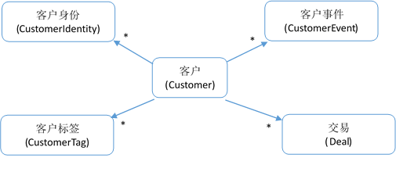
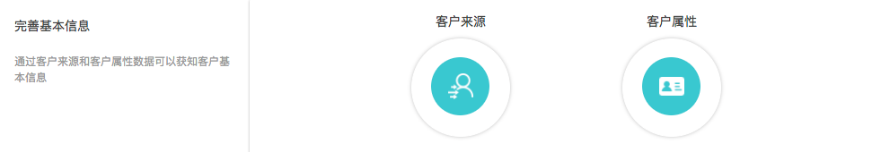
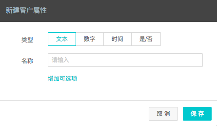
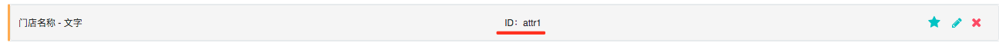

客户信息
客户模型

DM Hub为客户内置一些比较通用的客户属性，这些属性的名称和类型如下表所示：
| 属性 | 界面显示名称 | 类型 | 说明 |
|---|---|---|---|
| id | 客户ID | Long | 只读字段 |
| displayName | 显示名 | String | 只读字段。如果name不为空，等于name的值，否则等于nickName的值 |
| name | 姓名 | String | |
| img | 用户头像 | String | 头像地址URL |
| gender | 性别 | Integer | 0和空代表未知，1代表男，2代表女 |
| mobile | 手机号码 | String | |
| mobileVerified | 手机号码是否验证 | Boolean | 值为true或false |
| 邮箱 | String | ||
| emailVerified | 邮箱是否验证 | Boolean | 值为true或false |
| birthday | 生日 | String | 格式为: |
| 微信号 | String | ||
| nickName | 微信昵称 | String | |
| country | 国家 | String | |
| province | 省份 | String | |
| city | 城市 | String | |
| county | 区/县 | String | |
| homeAddress | 家庭地址 | String | 最长512个字符 |
| officeAddress | 公司地址 | String | 最长512个字符 |
| String | |||
| 微博 | String | ||
| stage | 当前阶段 | String | |
| dateJoin | 创建时间 | String | 格式为:“2017-06-01T12:12:12Z” 为UTC时间 对于微信粉丝，这个字段记录其关注微信的时间。 |
| source | 初始来源 | String | |
| contentName | 初始来源内容 | String | |
| company | 公司 | String | |
| title | 职位 | String | |
| industry | 公司行业 | String | |
| employeeNumber | 公司员工数 | Integer | |
| annualRevenue | 公司年收入 | BigDecimal | |
| website | 公司网站 | String | |
| telephone | 座机 | String | |
| isEmployee | 是否本公司员工 | Boolean | |
| campaignId | 营销活动ID | String | |
| campaignName | 营销活动 | String | |
| lastUpdated | 最后更新时间 | String | 只读字段，格式为:“2017-06-01T12:12:12Z”为UTC时间 |
| remark | 备注 | String | |
| dateCreated | 系统创建时间 | String | 只读字段，格式为:“2017-06-01T12:12:12Z”为UTC时间 |
| attr | 自定义字段 | Object | 自定义字段数据存放在该对象上 |
除了系统内置的客户属性外，您还可以增加自定义属性。请登录DM Hub，并打开 设置 > 客户属性 设置页面:

进入客户属性页面后，点击右上角的 新建用户属性 按钮，新建客户属性：

新建的用户属性会在客户属性列表页显示其技术名，如attr1，attr2等：

客户自定义属性会作为客户attr字段的属性，attr字段是一个对象类型。以下是含有自定义字段attr1的客户数据的JSON示例：
{
"name": "西门吹雪",
"attr": {
"attr1": "西门剑铺"
}
}
客户身份模型
客户通常是跨触点的，即一个客户同时在多个触点上与您接触。比如一个客户既使用浏览器浏览您的官网，又关注了您的微信公众号，同时又在您的某网上商城购买了东西。通常情况下，客户在任一个触点，都拥有一个该触点所特有的身份信息，如网页里的cookie，微信的openid，网上商城的登录账号。在DM Hub系统中一个客户可以同时拥有多个身份。DM Hub可以通过身份信息将多个触点上的客户信息进行合并。
客户身份有身份类型和身份值两个字段组成：
| 字段 | 型 | 说明 |
|---|---|---|
| type | 字符串(String) | 身份类型，如wechat表示微信openid，最长32位字符。对于自定义的身份类型，进入「设置中心」点击「客户身份」并「新建客户身份」 |
| value | 字符串(String) | 身份值，与type对应的值，如果type为wechat，value就是对应的openid。最长128位字符 |
DM Hub内置了几个身份类型:
| 内置身份类型 | 含义 |
|---|---|
| 微信的openid | |
| wechat-unionid | 微信的unionid |
| 邮箱 | |
| mobile | 手机号 |
创建客户
带身份创建客户的API
带身份的客户创建，顾名思义是创建客户的时候提供一个或多个客户身份。如果提供的身份已绑定到DM Hub中的现有客户，那么该API便不会创建新的客户，而是更新既有客户，同时将其他身份绑定到该客户上；如果客户信息内提供了手机和邮件地址信息，并且能通过该手机号或邮件地址在DM Hub查到客户，那么该API也不会创建新客户，而是更新找到的客户，并把身份绑定到该客户身上。如果以上两种情况都没找到客户，那么该API会创建一个新客户，并将所有客户身份信息绑定到该客户上。
需要注意的是，调用该接口更新现有客户的时候，无法将客户的字段清空。如果确实想清空客户的某些字段，请调用 更新客户API
调用请求
HTTP请求方式: POST
https://api.convertlab.com/v1/customerandidentities?access_token={access_token}
POST数据示例:
{
"customer": {
"name": "小D",
"mobile": "18612341234",
"mobileVerified": true,
"gender": 1
},
"customerIdentities": [
{
"identityType": "wechat",
"identityValue": "o123456...",
"identityName": "微信昵称"
},
{
"identityType": "your-system-account",
"identityValue": "user123",
"identityName": "您系统里的用户名"
}
]
}
参数说明
- {access_token}用从“获取身份权限”节拿到的access_token替换
- customerIdentities字段可以填写多个客户的身份，当身份是微信的openid时，identityType填写为”wechat”；当身份为微信的unionid时，identityType填为”wechat-unionid”。identityValue则对应的填写为客户的openid或unionid。
请求体中同时需要提供customer和customerIdentities的信息。
其中身份类型，可以使用DM Hub内置的身份类型，如wechat, wechat-unionid, mobile, email，也可以使用自定义的身份类型，对于自定义的身份类型，建议使用小写字母加中划线或下划线的方式，如taobao-account，这样便于使用身份搜索客户。
返回结果
{
"id": 7,
"displayName": "小D",
"name": "小D",
"img": null,
"gender": 1,
"mobile": "18612341234",
"mobileVerified": true,
"email": null,
"emailVerified": false,
"birthday": null,
"wechat": null,
"nickName": null,
"country": null,
"province": null,
"city": null,
"county": null,
"homeAddress": null,
"officeAddress": null,
"qq": null,
"weibo": null,
"stage": null,
"dateJoin": "2017-06-06T03:18:23Z",
"source": null,
"contentName": null,
"company": null,
"title": null,
"industry": null,
"employeeNumber": null,
"annualRevenue": null,
"website": null,
"telephone": null,
"ownerId": null,
"ownerName": null,
"isEmployee": false,
"campaignId": null,
"campaignName": null,
"lastUpdated": "2017-06-06T03:18:23Z",
"remark": null,
"isMember": false,
"dateCreated": "2017-06-06T03:18:23Z",
"attr": {
"attr1": null
}
}
注意事项: 使用微信openid或unionid作为客户身份之前，请将微信公众号绑定到DM Hub系统，并将微信粉丝导入到DM Hub系统。
普通创建客户API
普通创建客户API会根据请求体中的手机号码和邮件地址去查找现有客户，如果能查找到客户，就会更新现有客户，否则则创建一下新客户。
调用请求
HTTP请求方式: POST
https://api.convertlab.com/v1/customers?access_token={access_token}
POST数据示例:
{
"name": "小D",
"mobile": "18612341234",
"mobileVerified": true,
"gender": 1,
"createMethod": "ImportFromExternalSystem"
}
参数说明
{access_token} 的值为调用API的令牌，请参见 获取access_token
返回结果
{
"id": 7,
"displayName": "小D",
"name": "小D",
"img": null,
"gender": 1,
"mobile": "18612341234",
"mobileVerified": true,
"email": null,
"emailVerified": false,
"birthday": null,
"wechat": null,
"nickName": null,
"country": null,
"province": null,
"city": null,
"county": null,
"homeAddress": null,
"officeAddress": null,
"qq": null,
"weibo": null,
"stage": null,
"dateJoin": "2017-06-06T03:18:23Z",
"source": null,
"contentName": null,
"company": null,
"title": null,
"industry": null,
"employeeNumber": null,
"annualRevenue": null,
"website": null,
"telephone": null,
"ownerId": null,
"ownerName": null,
"isEmployee": false,
"campaignId": null,
"campaignName": null,
"lastUpdated": "2017-06-06T03:18:23Z",
"remark": null,
"isMember": false,
"dateCreated": "2017-06-06T03:18:23Z",
"attr": {
"attr1": null
}
}
更新客户的API
调用该API可以对DM Hub系统中的客户进行修改。 需要注意的一点是，对于mobileVerified为true的手机号，在手机号码不变的情况下，无法将mobileVerified字段改为false。对于emailVerified为true的电子邮箱，在邮箱地址不变的情况下，无法将emailVerified字段改为false。
调用请求
HTTP请求方式: PUT
https://api.convertlab.com/v1/customers/{id}?access_token={access_token}
PUT数据示例：
{
"name": "小D",
"mobile": "18612341234",
"mobileVerified": true,
"gender": 1
}
参数说明
- {access_token} 访问该API的令牌，请参见 获取access_token
- id 要修改的客户id
返回结果
返回修改后的客户信息
删除客户的API
删除指定的客户
调用请求
HTTP请求方式: DELETE
https://api.convertlab.com/v1/customers/{id}?access_token={access_token}
参数说明
- access_token 访问该API的令牌，请参见 获取access_token
- id 要修改的客户id
返回结果
返回状态码为204
获取单个客户的API
调用请求
HTTP请求方式: GET
https://api.convertlab.com/v1/customers/{id}?access_token={access_token}
参数说明
- {id}是要获取客户的id
- {access_token}用从“获取身份权限”节拿到的access_token替换
返回结果
{
"id": 7,
"displayName": "小D",
"name": "小D",
"img": null,
"gender": 1,
"mobile": "18612341234",
"mobileVerified": true,
"email": null,
"emailVerified": false,
"birthday": null,
"wechat": null,
"nickName": null,
"country": null,
"province": null,
"city": null,
"county": null,
"homeAddress": null,
"officeAddress": null,
"qq": null,
"weibo": null,
"stage": null,
"dateJoin": "2017-06-06T03:18:23Z",
"source": null,
"contentName": null,
"company": null,
"title": null,
"industry": null,
"employeeNumber": null,
"annualRevenue": null,
"website": null,
"telephone": null,
"ownerId": null,
"ownerName": null,
"isEmployee": false,
"campaignId": null,
"campaignName": null,
"lastUpdated": "2017-06-06T03:18:23Z",
"remark": null,
"isMember": false,
"dateCreated": "2017-06-06T03:18:23Z",
"attr": {
"attr1": null
}
}
查询客户的API
调用请求
HTTP请求方式: GET
https://api.convertlab.com/v1/customers?access_token={access_token}&stage={stage}&source={source}&mobile={mobile}&email={email}&gender={gender}&idList={idList}&dateCreatedFrom={dateCreatedFrom}&dateCreatedTo&lastUpdatedFrom={lastUpdatedFrom}&lastUpdatedTo={lastUpdatedTo}&select={select}&rows={rows}&page={page}&sidx={sidx}&sord={sord}
参数说明
| 参数 | 是否必填 | 说明 |
|---|---|---|
| access_token | 是 | 访问API的令牌 |
| stage | 否 | 用客户所处的阶段查询，如过查询的阶段为空，请使用stage=_empty |
| source | 否 | 用客户的初始来源查询 |
| mobile | 否 | 用客户的手机查询 |
| 否 | 用客户的邮箱查询 | |
| gender | 否 | 用客户的性别查询, 1代表男性，2代表女性，0代表未知 |
| idList | 否 | 支持以逗号分开的客户id列表，如idList=1,2,3,4 |
| dateCreatedFrom | 否 | 客户创建的起始时间，时间格式为 “2016-11-11T11:11:11” 为UTC事件 |
| dateCreatedTo | 否 | 客户创建的结束时间 |
| lastUpdatedFrom | 否 | 客户更新的起始时间(包含) |
| lastUpdatedTo | 否 | 客户更新的结束时间 |
| select | 否 | 返回的字段，多个字段用逗号隔开。默认返回所有字段，可以用select指定要返回的字段 |
| rows | 否 | 每页的记录数，默认每页返回20行 |
| page | 否 | 返回第几页，默认返回第1页 |
| sidx | 否 | 按什么字段排序，默认按id排序 |
| sord | 否 | asc表示升序，desc表示降序。默认按升序排序 |
返回结果 - 返回的所有客户数据保存在名叫rows的array字段中
{
"rows": [
{
"id": 1,
"displayName": "大D",
"name": "大D",
"img": null,
"gender": 1,
"mobile": "18612341234",
"mobileVerified": true,
"email": null
// 客户的其他字段
},
{
"id": 7,
"displayName": "小D",
"name": "小D",
"img": null,
"gender": 1,
"mobile": "18612341235",
"mobileVerified": true,
"email": null
// 客户的其他字段
}
]
}
获取客户数量的API
调用请求
HTTP请求方式: GET
https://api.convertlab.com/v1/customers/count?access_token={access_token}&stage={stage}&source={source}&mobile={mobile}&gender={gender}&idList={idList}&dateCreatedFrom={dateCreatedFrom}&dateCreatedTo&lastUpdatedFrom={lastUpdatedFrom}&lastUpdatedTo={lastUpdatedTo}
参数说明
| 参数 | 是否必填 | 说明 |
|---|---|---|
| access_token | 是 | 访问API的令牌 |
| stage | 否 | 用客户所处的阶段查询，如过查询的阶段为空，请使用stage=_empty |
| source | 否 | 用客户的初始来源查询 |
| mobile | 否 | 用客户的手机查询 |
| gender | 否 | 用客户的性别查询, 1代表男性，2代表女性，0代表未知 |
| idList | 否 | 支持以逗号分开的客户id列表，如idList=1,2,3,4 |
| dateCreatedFrom | 否 | 客户创建的起始时间，时间格式为 “2016-11-11T11:11:11” 为UTC事件 |
| dateCreatedTo | 否 | 客户创建的结束时间 |
| lastUpdatedFrom | 否 | 客户更新的其实时间(包含) |
| lastUpdateTo | 否 | 客户更新的结束时间 |
| select | 否 | 返回的字段，多个字段用逗号隔开。默认返回所有字段，可以用select指定要返回的字段 |
返回结果
返回满足条件的客户的数量
添加客户身份的API
可以为DM Hub系统中的现有客户添加客户身份。新添加的身份将出现在客户详情页的左下角
调用请求
HTTP请求方式: POST
https://api.convertlab.com/v1/customeridentities?access_token={access_token}
POST请求示例：
{
"customerId": "123456",
"identityType": "myshop-account",
"identityValue": "user12345",
"identityName": "小羊苏西"
}
参数说明
| 参数 | 是否必填 | 说明 |
|---|---|---|
| access_token | 是 | 访问API的令牌 |
| customerId | 是 | 需要添加身份的客户id |
| identityType | 是 | 要添加的客户身份类型，详见 客户身份模型,最长32位字符 |
| identityValue | 是 | 要添加的客户身份值，最长128位字符 |
| identityName | 否 | 客户身份对应的昵称，最长256位字符 |
返回结果
{
"customerId": "123456",
"identityType": "myshop-account",
"identityValue": "user12345",
"identityName": "小羊苏西"
}
查询客户身份的API
可以根据一个或多个客户id查询客户的身份，也可以通过身份的类型和身份值查询客户id
调用请求
HTTP请求方式: GET
https://api.convertlab.com/v1/customeridentities?access_token={access_token}&customerIds={customerIds}&identityType={identityType}&identityValue={identityValue}
参数说明
| 参数 | 是否必填 | 说明 |
|---|---|---|
| access_token | 是 | 访问API的令牌 |
| customerIds | 否 | 要查询客户身份的客户id列表，多个客户id用逗号隔开，如 “123，124” |
| identityType | 否 | 要查询客户id的身份类型，与identityValue同时使用 |
| identityValue | 否 | 要查询客户id的身份值，与identityType同时使用 |
返回结果
[
{
"customerId": "123456",
"identityType": "myshop-account",
"identityValue": "user12345",
"identityName": "小羊苏西"
},
{
"customerId": "123456",
"identityType": "wechat",
"identityValue": "openid12345",
"identityName": "小羊苏西"
}
]
返回参数说明
- identityTyp 客户身份类型
- identityValue 客户的在你系统中的id
- customerId 客户的id
- identityName客户身份名称
查询客户的统计信息
调用请求
GET
/v1/customerStatistics?access_token={access_token}&rows={rows}&page={page}&sidx={sidx}&sord={sord}&customerId={customerId}
请求参数说明
| Name | In | Required | Type | Description |
|---|---|---|---|---|
| access_token | query | yes | string | 用从“获取身份权限”节拿到的access_token替换 |
| rows | query | no | number | 一页包含多少条记录，默认值为5 |
| page | query | no | number | 取第几页的数据，默认值为1 |
| sidx | query | no | string | 用于排序的字段，默认为“id” |
| sord | query | no | string | 排序方式，asc表示升序，desc表示降序，默认为asc |
| customerId | query | no | number | 精确查询某个客户的记录 |
返回数据
{
"items":[
{
"customerId": 4678,
"firstOrderDate": "2015-04-28T03:43:33Z",
"id": 10948,
"lastOrderDate": "2015-04-28T03:43:33Z",
"lastOrderDays": 635,
"lastUpdated": "2017-01-22T16:34:03Z",
"latest30daysScore": 0,
"orderAMT": 0.05,
"orderAMTA": 4.2,
"orderAPCT": 88,
"orderTotal": 1,
"orderTotalAmount": 88,
"totalScore": 0
}
],
"meta": {
"records": 20,
"total": 7,
"hasNext": true
}
}
返回数据说明
| Name | Type | Description |
|---|---|---|
| items | array | 数据块标签 |
| customerId | ||
| firstOrderDate | ||
| id | number | 这条记录的ID |
| lastOrderDate | ||
| lastOrderDays | ||
| lastUpdated | ||
| latest30daysScore | ||
| orderAMT | ||
| orderAMTA | ||
| orderAPCT | ||
| orderTotal | ||
| orderTotalAmount | ||
| totalScore | number | 客户活跃度值 |
| meta | object | 元数据块标签 |
| records | number | 总记录条数 |
| total | number | 总页数 |
| hasNext | boolean | 是否还有记录 |